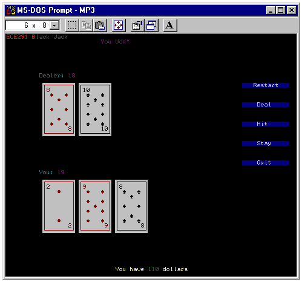

| ECE291 |
Computer Engineering II |
Moorman, Summer 1998 |
Machine Problem 3: Black Jack
| Due Date | Wednesday 7/15/98 |
| Purpose |
Text Mode Graphics, Tables, Software Interrupts - Mouse Functions
|
| Points | 50 |

Introduction
In this MP we will be developing the game of Black Jack. This is a
simple card game that is very popular in casino's around the world.
Hopefully, this MP will not fuel anyones gambling addiction.
The premise of the games is to be dealt cards that total up to 21 but do
not exceed that amount. Normal play is against a dealer who gets to
draw cards after you. For clarification lets call the two players the dealer
(computer) and the user (person playing the program.)
The dealer also only has one card showing during the user
card selection. Both players (Dealer and User) are dealt two cards
initially. Only one of the dealer cards is visible. The user must then
make a decision to ask for another card (if they think they can get closer
to 21 without going over), or they may stay and let the dealer try
to get 21.
Though Black Jack played in Las Vegas has additional rules and betting
possibilities (such as split, double, etc.), we will be playing by a very
simple set of rules. Following is the ECE291 Black Jack Guidelines:
- Each bet is worth a fixed amount of money.
- The player with the card total closest to 21 without going over is
considered the winner of that deal.
- If the dealer wins the user loses the amount equal to the bet.
- If the user wins the user gains an amount equal to the bet.
- If the result is a draw (tie), then no amount of money is changed.
- The game continues until the user quits, loses an amount that exceeds
the declared minimum, or wins an amount that exceeds the declared
maximum.
Implementation
Your implementation of this program should follow that of the library
code. You will use text mode graphics to display the necessary GUI
(Graphical User Interface) to the screen. All input will be through
the mouse.
Your program should do the following:
- Display the 5 buttons on the right with the game choices.
- Use Mouse input to determine which functions to perform.
- Randomly choose cards from a deck for dealing.
- Reinitialize to a new deck when all cards from the old deck are used.
- Graphically display all card values to the screen.
- Perform the computer AI for the dealer.
- Calculate the value of each players hand.
- Determine the winner based on the total in each hand.
- Keep track of the user score in dollars, and display to the screen.
User Interface
- You are given the framework of a program which provides
a menu-driven interface. Run the library version to get a feel for
how the program should operate, and what functions result from
each button press.
- By selecting an option from the menu with the mouse, the user can:
- [Restart] to begin the game with a new deck.
- [Deal] to have the dealer start a new hand (using the same deck).
- [Hit] to add another card to the user hand.
- [Stay] to finish the user hand and allow the dealer to finish.
- [Quit] to exit the game.
The key data structure in the game is called CardArray. This is
an array of words that stores the current status of the deck being used.
Each word is used to store information regarding one card. The deck is
initialized to DECKSIZE (52 cards in a deck). Each time a new
card needs to be dealt a random value is chosen and that card removed from
the CardArray. This hole is then replaced with the last card in
the deck, and the size of the deck decreased by 1.
In other words, you might think of this as laying out all the cards in a
row. Each time a card is chosen from the deck the last card in the row
replaces the missing card spot. This keeps the cards stored together in
the array without any holes.
The contents of each word in the array is two bytes of information. The
second byte is a value (0-4) to specify with which suit the card is
associated. The first byte is the actual number of the card (1-13). When
you read a word of the array into a register the high byte = suit, and the
low byte = card number.
You will also be using a number of tables in this MP for easier manipulation
of graphics. The table values are given to you in the program framework.
A sample screen shot is shown above. Your program should match this very
closely though it does not have to be exact. The location of certain
buttons are given as constants and are described below.
Your program should work for all types of input. It should be robust to
keypresses or mouse button presses on any area of the screen.
80x50 Text Mode Video
You will be using text-mode video graphics to display the game on the screen.
You will be using direct video memory writes as described in the lecture
notes. Using 80x50 text mode is a simple extension of what you know
about 80x25 text mode. You simply double the size of the memory page
to which you will write data.
Data Structures
- The following variables have already been defined for you in the program
framework.
- CardLength: The current size of the remaining deck.
Initialized to DECKSIZE and decremented as cards are
randomly chosen.
- CardArray: The array of cards left in the deck.
1st Byte = Card Suit (HEART,DIAMOND,CLUB,SPADE)
2nd Byte = Card Number
- 1 = Ace
- 2-10 = Card of that number
- 11 = Jack
- 12 = Queen
- 13 = King
- HiddenCard: This is a word that is used to store the dealer
card that is hidden initially. This card can then be removed
from the card array for further deals.
- Flags: This is a variable that has specific bit positions
for various flags:
- Bit 0 = Deal only flag. Set to restrict the user from
performing a button operation that is illegal.
- Bit 1 = Player bust flag. Set when the user has a total
greater than 21.
- Bit 2 = Dealer bust flag. Set when the dealer has a total
greater than 21.
- Bit 3 = GameOver flag. Set when MIN_SCORE or
MAX_SCORE has been exceeded.
- DealerTot: The current total of the dealers hand.
- PlayerTot: The current total of the users hand.
- Score: Current amount of dollars that the user has.
Initialized to INIT_SCORE.
- Suit_Pos: Address table for drawing the cards.
Each entry in the table is the address of another table
that holds the positions of where to draw the ASCII suit
characters.
Each of these respective tables has as many entries as the
number of the card (i.e. Card 6 = 6 entries, Card 10 = 10 entries),
except face cards (Jack, Queen, King) which only have 2 entries.
- Zero-Face: Individual tables for the positions of
the ASCII suit characters. All values are offsets relative to
the upper left corner of where the card is drawn.
- These constants have also been defined:
- TEXTVIDSEG == 0B800h
This is page 0 of text video graphics.
- ROWWIDTH == 160
The respective width of a row in text mode. (80 columns * 2 bytes/col)
- INIT_SCORE == 100
The initial score of the user in dollars.
- BET == 10
The value of each user bet in dollars.
- MAX_SCORE == 500
The maximum amount the user is allowed to have before the game ends.
(User wins!)
- MIN_SCORE == -500
The minimum amount the user is allowed to have before the game ends.
(Dealer Wins!)
- DECKSIZE == 52
The initial size of a deck.
- CARDWIDTH == 9
The number of characters wide for each card drawn.
- CARDHEIGHT == 11
The number of characters high for each card drawn.
- SCORE_POS == 48*ROWWIDTH + 60
Beginning position of the score message. (60,48)
- DOLLAR_POS == SCORE_POS + 18
Beginning position of the dollar amount to be displayed. (78,48)
- RESTART_ROW == 10
The row position of the restart button. (10)
- DEAL_ROW == RESTART_ROW + 4
The row position of the deal button. (14)
- HIT_ROW == DEAL_ROW + 4
The row position of the hit button. (18)
- STAY_ROW == HIT_ROW + 4
The row position of the stay button. (22)
- QUIT_ROW == STAY_ROW + 4
The row position of the quit button. (26)
- BUTTON_COL == 130
The actual column position of each button.
- BUTTONSTART == RESTART_ROW*ROWWIDTH + BUTTON_COL
The starting position of the first button. (65,10)
- BUTTONWIDTH == 13
The width of each button.
- RESTART_POS == RESTART_ROW*ROWWIDTH+BUTTON_COL
The actual position of the restart button. (65,10)
- DEAL_POS == DEAL_ROW*ROWWIDTH+BUTTON_COL
The actual position of the deal button. (65,14)
- HIT_POS == HIT_ROW*ROWWIDTH+BUTTON_COL
The actual position of the hit button. (65,18)
- STAY_POS == STAY_ROW*ROWWIDTH+BUTTON_COL
The actual position of the stay button. (65,22)
- QUIT_POS == QUIT_ROW*ROWWIDTH+BUTTON_COL
The actual position of the quit button. (65,26)
- DEALER_POS == 8*ROWWIDTH+ 2*8
The position of the 'Dealer:' title. (8,8)
- PLAYER_POS == 28*ROWWIDTH+ 2*8
The position of the 'You:' title. (8,28)
- MSG_POS == 1*ROWWIDTH+ 50
The position of informational messages. (25,1)
- HEART == 0
Value for Heart suit.
- DIAMOND == 1
Value for Diamond suit.
- CLUB == 2
Value for Club suit.
- SPADE == 3
Value for Spade suit.
- DEALFLAG == 00000001b
Binary bit mask for the deal flag.
- PLAYBUST == 00000010b
Binary bit mask for the player bust flag.
- DEALBUST == 00000100b
Binary bit mask for the dealer bust flag.
- GAMEOVER == 00001000b
Binary bit mask for the game over flag.
Procedures
- This assignment has nine procedures.
You will receive credit for this
assignment by replacing each of the nine
procedures listed below with your own code.
- The tenth procedure (Random) you are already given and
do not need to replace.
- Experiment with the working code
to gain a full understanding of how the programs works.
- Your program should exactly match the functionality of the library
subroutines.
- All subroutines should be modular. They should use the stack to
preserve the value of any registers they may modify.
- Library routines only call other Library Routines.
Keep this in mind when testing your code with the given library code.
- MouseControl
- Purpose: To get the user input via the mouse.
- Inputs: none
- Outputs: AX = Value of button that was hit.
- AX = 0 (Nothing Valid pressed)
- AX = 1 (Reset button pressed)
- AX = 2 (Deal button pressed)
- AX = 3 (Hit button pressed)
- AX = 4 (Stay button pressed)
- AX = 5 (Quit button pressed)
- Description: This function will use software interrupts to
determine when a mouse button has been hit and where on the screen
it is pointing to. Valid numbers will be returned when a button
has been found to be pressed. These buttons are the messages with
blue backgrounds along the right side of the screen.
- Notes:
- This program spends most of its time in this procedure
waiting for the user to press a button. The routine loops until
the user has clicked a button (i.e. held and released the mouse
button).
- The mouse status is read via software interrupts. Input registers
are loaded and INT 33h is executed.
- The mouse interrupt functions are documented in the lab manual.
- Notice the mouse is initialized and made visible in the main routine.
You do not need to repeat this code.
- Hints:
- Think of performing functions on a button release and not a button
press. Why is this do you think?
- Many comparisons will have to be performed in this procedure, use
the constants defined at the top of the program.
- Points: 5
- DrawCard
- Purpose: Draws a card to the screen with the given attribute
at the given location.
- Inputs:
- ES = Video Segment.
- AH = Suit of card to draw (0-3).
- AL = Card Value (1-13).
If AL=0, then the back of the card should be drawn.
- BH = Row of where to draw on the screen.
- BL = Column of where to draw on the screen.
- Outputs: Card drawn at proper location on the screen.
- Notes:
- This routine will take alot of code to get a card correctly drawn.
- The '10' card will take some extra work since the number has
2 digits and all other cards only have 1 digit.
- Face cards only have two suit ASCII characters drawn and do not
have pictures that have to be displayed.
- A special section of code will also be needed for the case of
an input AL = 0 for the back of the card.
- Calls: This function is called by Hit, Deal and
Stay.
- Hints:
- This is a convenient place to write a helper function that
writes a string to the screen at a given location. (DrawString)
- Use your tables defined above for location of suit ASCII characters.
- Try breaking this down into steps. Draw a blank card. Then draw
the digits of the card, then draw the ASCII suit characters.
- Points: 8
- DrawBoard
- Purpose: Draws out all the static elements of the display.
- Inputs: ES = Video Segment
- Outputs: Writes to screen
- Description: This routine draws all the buttons and the static
messages to the screen. This includes the title, the two player
messages, and the static section of the score message.
- Calls: This function is called by ResetBoard and Deal.
- Hints:
- Again you might find a DrawString helper function convenient.
- Use the constants defined at the top for message and button
positions.
- Points: 5
- DrawScore
- Purpose: Draws the current player score to the screen.
- Inputs: Score = Value to output.
- Outputs: Draws to screen.
- Hints:
- This is a convenient place to use the helper function that
writes a string to the screen at a given location. (DrawString)
- The score part of the screen should be erased with spaces first.
- The score must be converted from binary to ASCII.
- Calls: This function is called by ResetBoard and Deal.
- Points: 2
- ResetBoard
- Purpose: Reinitializes the entire game.
- Inputs:
- SI = Address of CardArray.
- DI = Address of CardLength.
- Outputs:
- Score = Reset to INIT_SCORE.
- [SI] = CardArray address is reinitialized with a new deck.
- [DI] = CardLength address is renitialized to DECKSIZE.
- Flags = 00000001b (Deal only flag is set).
- Screen is refreshed.
- Calls: DrawBoard and DrawScore.
- Hints:
- This might be a convenient place to use helper functions that
clear the screen (ClearScreen) and initialize the card
array back to the full deck state (ArrayInit).
- This function is called when the game initially runs and any
time the 'Reset' button is pressed.
- Points: 4
- Hit
- Purpose: Hit the player with a new card.
- Inputs:
- SI = Address of CardArray.
- DI = Address of CardLength.
- Flags
- PlayerTot
- Outputs:
- [SI] = (CardArray) has 1 card removed.
- [DI] = (CardLength) is decremented by 1.
- PlayerTot = Is updated to reflect the current total value
of the cards in the user's hand.
- If player busts ==>
- Flags = 00000010 (Player Bust flag set)
This blocks any 'Hit' or 'Stay' until 'Deal'
- If last card is chosen from the deck then the deck is renitialized.
- Notes:
- If upon entering this routine any flag is set
(DEALFLAG, PLAYBUST, DEALBUST, GAMEOVER) then the routine should exit.
- Calls: Random and DrawCard.
- Hints:
- A helper function PickCard that picks a card from the deck, updates the
array and length, and then returns the card would be helpful.
- When calculating the new PlayerTot all face cards are
worth 10.
- Aces can either be worth 1 or 11. If the Ace can be worth 11
then count it as 11, if however this busts the player then
only count the Ace as 1.
- You can also use your ArrayInit helper function in this
procedure.
- Points: 7
- Deal
- Purpose: Perform an initial Deal. Two cards go to the dealer
(One face down), and two cards to the user/player.
- Inputs:
- SI = Address of CardArray.
- DI = Address of CardLength.
- Outputs:
- Initial cards are displayed to the screen.
- Flags are reset to 0. (All flags cleared).
- [SI] = (CardArray) reflects new status of deck. (4 less cards)
Array is reinitialized if new deck is needed.
- [DI] = (CardLength) reflects new size of deck. (4 less)
- PlayerTot = Cleared and recalculated.
- DealerTot = Cleared and recalculated.
- HiddenCard = Value of the face down card.
- Calls: Calls DrawBoard, DrawScore and DrawCard.
Optionally may call Hit.
- Hints:
- Clear the screen before you draw the new board and score.
- Use your helper function PickCard and ArrayInit.
- Initial Aces will always be worth 11.
- Points: 7
- Stay
- Purpose: Perform the dealer AI for blackjack.
- Inputs:
- SI = Address of CardArray.
- DI = Address of CardLength.
- Flags
- DealerTot
- HiddenCard
- Outputs:
- [SI] = (CardArray) has cards removed that were drawn.
- [DI] = (CardLength) is decremented by the number of
cards chosen.
- DealerTot = Is updated to reflect the current total value
of the cards in the dealer's hand.
- If dealer busts ==>
- Flags = 00000100 (Dealer Bust flag set)
This blocks any 'Hit' or 'Stay' until 'Deal'
- If last card is chosen from the deck then the deck is renitialized.
- Description: The dealer AI for blackjack is a simple check of
the current total value of the dealer cards. If DealerTot
> 16 then the dealer will stay, if however DealerTot
< 17 then the dealer will draw a new card.
- Notes:
- If upon entering this routine any flag is set
(DEALFLAG, PLAYBUST, DEALBUST, GAMEOVER) then the routine should exit.
- Again do the procedure in steps. Expose the hidden card, then
continue to 'Hit' the dealer as required by the AI.
- Calls: Random and DrawCard.
- Hints:
- The helper function PickCard would again be very useful.
- When calculating the new DealerTot all face cards are
worth 10.
- Aces can either be worth 1 or 11. If the Ace can be worth 11
then count it as 11, if however this busts the dealer then
only count the Ace as 1.
- You can also use your ArrayInit helper function in this
procedure.
- Points: 7
- Winner
- Purpose: Determines who has won this hand.
- Inputs:
- Flags
- PlayerTot
- DealerTot
- Outputs:
- Displays winner message to screen.
- Score = new value from Win/Loss BET.
- Flags = 00000001b (DEALFLAG set = allow 'Deal' only).
- If Score goes out of range then
Flags = 00001000b (GAMEOVER flag set)
Range: MIN_SCORE < Score < MAX_SCORE
- Notes: This procedure also takes care of determining if either
player is bust (by looking at the flags). If this is
the case the proper message is output and the Score
is updated to reflect the state.
- Points: 5
- Random
- Purpose: This routine generates and returns a pseudo-random
number by multiplication and addition of large prime constants to
a random number.
- Inputs: Randval memory variable
- Outputs: AX - Random number between 0 .. 2^16-1
- Notes: The random function is defined below.
R(1) = Randval
R(i+1) = Randval = (K1 *R(i) + K2) % MaxValue
Where
- R(i) is the random value generated in the
i-th call to the subroutine.
- Randval is a variable that holds the initial random
value and is updated with the result after each call to Random.
- K1 and K2 are two large, prime-valued constants.
- MaxValue = 2^16-1 (0FFFFh)
- Hints:
- The first call to Random returns the orginal random number seed.
- This is a library Functions that can be used where appropriate
with no point penalty.
- Points: 0
Preliminary Procedure
- Copy the empty MP3 program (MP3.ASM), libraries
(libmp3.lib,lib291.lib), and Makefile from
the network drive to your home directory with the following command:
xcopy /s V:\ece291\mp3 W:\mp3
Alternatively, from home, you can download the same files as mp3.zip.
- As with previous MPs, run NMake to build an executable program
using the given ECE291 library functions.
- As with previous MPs, use a text editor to modify the program. As given,
the program uses LIBMP3 routines to implement all functionality. To
receive full credit for the assignment, you will need to implement
each of the subroutines described above with your own code.
- As with previous MPs, use CodeView (CV) to debug and test your
program. Because you only receive credit for procedures that function
completely as specified, it is best to debug each routine individually.
Final Steps
- Print a copy of the MP3 grading sheet.
- Demonstrate MP3.EXE to a TA or to the instructor.
- Be prepared to answer questions about any aspect of the operation
of your program. The TAs will not accept an MP if you cannot fully
explain all operations of your code.
- Handin in your program by running:
A:\Handin YourWindowsLogin
- Print MP3.ASM using
GreenPrint32
- Staple the MP3 grading sheet to the front of your MP3.ASM file
and give both to the same TA that approved your demonstration.
MP3.ASM (Program framework)
TITLE Black Jack - Your Name - Current Date
COMMENT %
Black Jack
--------------------
ECE291: MP3
Jay R. Moorman
University of Illinois, Dept. of Electrical & Computer Engineering
Summer 1998
Revision 1.0
%
;====== Constants =========================================================
; General Constants
CR EQU 13
LF EQU 10
TEXTVIDSEG EQU 0B800h
ROWWIDTH EQU 160
; Score Constants
INIT_SCORE EQU 100
BET EQU 10
MAX_SCORE EQU 500
MIN_SCORE EQU -500
PUBLIC INIT_SCORE,BET,MAX_SCORE,MIN_SCORE ; Declare these public for the library code
; Card Constants
DECKSIZE EQU 13*4
CARDWIDTH EQU 9
CARDHEIGHT EQU 11
; Button Constants
SCORE_POS EQU 48*ROWWIDTH+60
DOLLAR_POS EQU SCORE_POS+18
RESTART_ROW EQU 10
DEAL_ROW EQU RESTART_ROW+4
HIT_ROW EQU DEAL_ROW+4
STAY_ROW EQU HIT_ROW+4
QUIT_ROW EQU STAY_ROW+4
BUTTON_COL EQU 130
BUTTONSTART EQU RESTART_ROW*ROWWIDTH+BUTTON_COL
BUTTONWIDTH EQU 13
RESTART_POS EQU RESTART_ROW*ROWWIDTH+BUTTON_COL
DEAL_POS EQU DEAL_ROW*ROWWIDTH+BUTTON_COL
HIT_POS EQU HIT_ROW*ROWWIDTH+BUTTON_COL
STAY_POS EQU STAY_ROW*ROWWIDTH+BUTTON_COL
QUIT_POS EQU QUIT_ROW*ROWWIDTH+BUTTON_COL
DEALER_POS EQU 8*ROWWIDTH+2*8 ; (Row=8, Col=8)
PLAYER_POS EQU 28*ROWWIDTH+2*8 ; (Row=28,Col=8)
MSG_POS EQU 1*ROWWIDTH + 50
; Suits for the deck
HEART EQU 0
DIAMOND EQU 1
CLUB EQU 2
SPADE EQU 3
; Flag bits
DEALFLAG EQU 00000001b ;Bit 0 = Deal Only flag
PLAYBUST EQU 00000010b ;Bit 1 = Player bust flag
DEALBUST EQU 00000100b ;Bit 2 = Dealer bust flag
GAMEOVER EQU 00001000b ;Bit 3 = Game Over flag
;====== Externals =========================================================
; -- LIB291 Routines (free) --
extrn binasc:near ; From lib291.lib (You can use these functions freely)
extrn dspout:near ; See your lab manual for a full description
extrn dspmsg:near ; of each function
extrn kbdin:near
extrn mp3xit:near ; Terminates Program
; -- LIBMP3 Routines (replace these with your own code) --
extrn Random:near ; Use this routine freely
extrn MouseControl:near ; Comment out each line as you
extrn DrawCard:near ; write the routines
extrn DrawBoard:near
extrn DrawScore:near
extrn ResetBoard:near
extrn Hit:far
extrn Deal:far
extrn Stay:far
extrn Winner:near
;====== Stack Segment =====================================================
stkseg segment stack
db 64 dup ('STACK ')
stkseg ends
;====== Code/Data segment =================================================
cseg segment public 'CODE'
assume cs:cseg, ds:cseg, ss:stkseg, es:nothing
;====== Variables =========================================================
; Messages
LossOverMsg db ' You are out of money, GAME OVER! ','$'
WinOverMsg db ' You busted the bank, GAME OVER! ','$'
ContinueMsg db ' <Hit Any Key to Continue> ','$'
; Buffers
PBuf db 7 dup(?)
; Variables
PUBLIC Flags
PUBLIC HiddenCard
PUBLIC DealerTot,PlayerTot
PUBLIC Score
CardLength dw DECKSIZE
CardArray dw DECKSIZE dup(0)
HiddenCard dw 0
Flags db 0
;Bit 0 = Deal Only flag
;Bit 1 = Player bust flag
;Bit 2 = Dealer bust flag
;Bit 3 = Game Over flag
DealerTot db 0
PlayerTot db 0
Score dw INIT_SCORE
; Position of Suit icons relative to card position
Suit_Pos dw offset Zero
dw offset Ace
dw offset Two
dw offset Three
dw offset Four
dw offset Five
dw offset Six
dw offset Seven
dw offset Eight
dw offset Nine
dw offset Ten
dw offset Face
dw offset Face
dw offset Face
Zero dw 0
Ace dw 808
Two dw 328,1288
Three dw 328,808 ,1288
Four dw 324,332 ,1284,1292
Five dw 324,332 ,808 ,1284,1292
Six dw 324,332 ,804 ,812 ,1284,1292
Seven dw 324,332 ,804 ,812 ,1128,1284,1292
Eight dw 324,332 ,488 ,804 ,812 ,1128,1284,1292
Nine dw 324,332 ,644 ,652 ,808 ,964 ,972 ,1284,1292
Ten dw 324,332 ,488 ,644 ,652 ,964 ,972 ,1128,1284,1292
Face dw 322,1294
; ======== Your Code ======================================================
; -- Write the code for your subroutines below --
;MouseControl PROC NEAR
; ret
;MouseControl ENDP
;DrawBoard Proc NEAR
; ret
;DrawBoard ENDP
;DrawCard Proc NEAR
; ret
;DrawCard ENDP
;DrawScore Proc NEAR
; ret
;DrawScore ENDP
;ResetBoard Proc NEAR
; ret
;ResetBoard ENDP
;Hit Proc NEAR
; ret
;Hit ENDP
;Deal Proc NEAR
; ret
;Deal ENDP
;Stay Proc NEAR
; ret
;Stay ENDP
;Winner Proc NEAR
; ret
;Winner ENDP
; == Main ================================================================
MAIN Proc NEAR
; Initialize DS register
mov ax, cseg
mov ds, ax
; Put display into 80x50 text mode
mov ax, 1202h ; Sets to 400 line scan mode
mov bl, 30h
int 10h
mov ax, 3 ; Sets to 8x8 font
int 10h
mov ax, 1112h ; Enter text mode
mov bl, 0
int 10h
; Initialize the mouse hardware, Function 0000h
mov ax, 0000h
int 33h
; Display the mouse cursor, Function 0001h
mov AX, 0001h
int 33h
; Fix Cursor Scan
mov ah,1 ; Change Scan position of cursor
mov ch,0
mov cl,0
int 10h
; Hide the blinking cursor
mov ah,02h ; Move the cursor off screen
mov bh,00h ; (Row=50, Col=0)
mov dh,50
mov dl,0
int 10h
; The Main Program Code
mov ax, TEXTVIDSEG ; Setup the video segment
mov es,ax
mov si,offset CardArray ; Setup offsets for
mov di,offset CardLength ; subroutine calls
call ResetBoard ; Draw the initial board
MainLoop:
call MouseControl ; Wait for button press
cmp ax,1
jne Check_Deal
call ResetBoard ; Reset the entire Game Board
jmp MainLoop
Check_Deal:
cmp ax,2
jne Check_Hit
call Deal ; Deal a new round
jmp MainLoop
Check_Hit:
cmp ax,3
jne Check_Stay
call Hit ; Hit Player
cmp Flags,PLAYBUST ; See if Player bust
jne MainLoop
call Winner ; Update winner and score
call DrawScore ; Redisplay score
cmp Flags,GAMEOVER ; See if GameOver
jl MainLoop
jmp GameDone
Check_Stay:
cmp ax,4
jne Check_Quit
call Stay ; Player Stays - Cards to Dealer
call Winner ; Update winner and score
call DrawScore ; Redisplay score
cmp Flags,GAMEOVER ; See if GameOver
jl MainLoop
jmp GameDone
Check_Quit:
cmp ax,5
jne MainLoop ; Keep polling mouse
jmp EndIt ; unless 'Quit' was hit
GameDone:
; Use BIOS routines to display string to screen
; Your code must use direct writes to video
mov ax,1300h ; BIOS Write string
mov bx,0005h ; Page=0, Attribute=Magenta
mov dx,0315h ; Row=3, Col=15
mov cx,34 ; String length
push ds ; Set es:bp -> String Start
pop es
cmp Score,MIN_SCORE ; See if player lost or won game
jg WinDone
LossDone: ; Player lost all money
mov bp,offset LossOverMsg
jmp SkipWin
WinDone: ; Player won all money
mov bp,offset WinOverMsg
SkipWin:
int 10h
mov dx,0415h ; Row=4, Col=15
mov bp,offset ContinueMsg
int 10h
call kbdin ; Wait for user to end
; Put back into 80x50 text video mode
EndIt:
mov ax, 1202h ; Scan lines
mov bl, 30h
int 10h
mov ax, 3 ; Font
int 10h
mov ax, 1112h ; Text Mode
mov al, 0
int 10h
call mp3xit ; Exit program
main endp
; ===================== End of Procedures & Data ==========================
cseg ends
end main